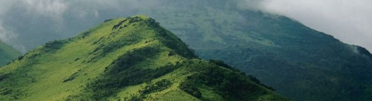
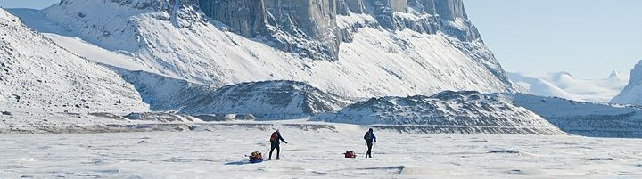
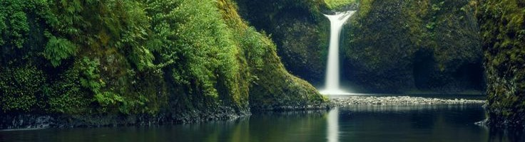

Further Steps



Individual Steps
Reduce Your Carbon Footprint
Walk, bike, or take public transportation instead of riding in a car whenever possible
Use less energy by turning off lights and electronics when not in use
Reduce, Reuse, Recycle to cut down on waste
Use renewable energy in order to cut out fossil fuel usage
Be Mindful of Your Surroundings
Plant trees and other plants around your home, as they help clean the air.
Properly displose of chemical and pollutatnts.
Avoid burning leaves or other materials outdoors.